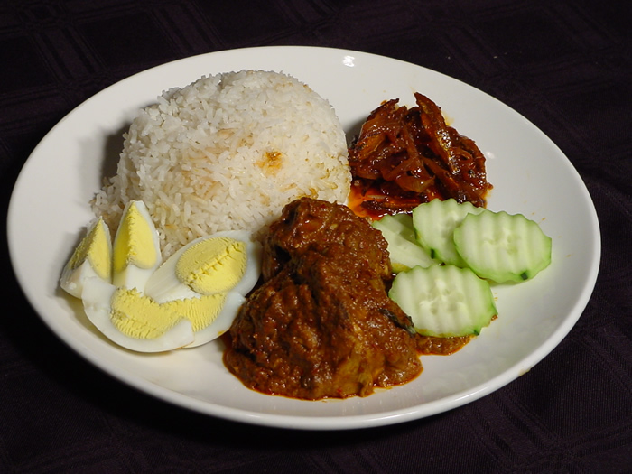
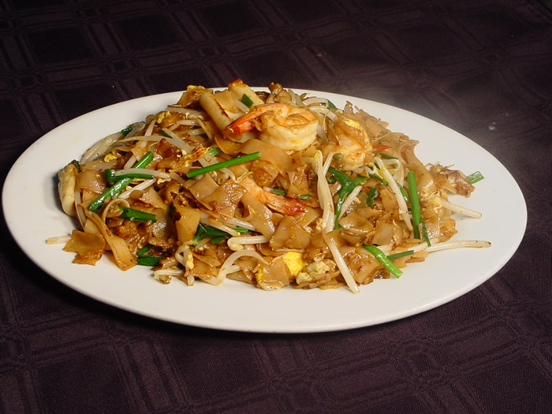
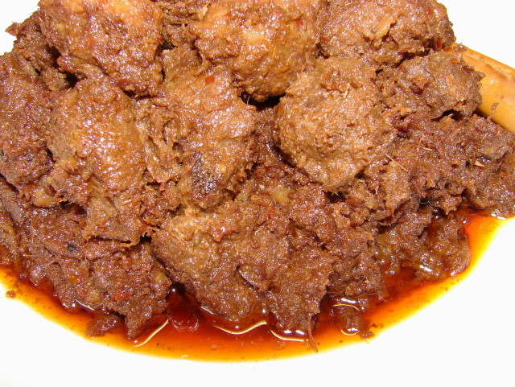

Smartphone version. The full version can be found here.
A question in Malay for you. Please click. Lesson 23 Apa yang anda suka makan?
(What do you like to eat?)
Click to listen to the Malay sentences.
A second reading (by Michelle Nor Ismat, a native speaker)
|
Saya suka makan ayam. Anda suka makan apa? Saya suka makan ikan. Isteri saya suka makan udang. Suaminya suka makan telur dan daging. Kami* makan nasi tiap-tiap hari. |
I like to eat chicken. What do you like to eat? I like to eat fish. My wife likes to eat prawns. Her husband likes to eat eggs and meat. We eat rice every day. |
Vocabulary suka = to like makan = to eat ayam = chicken ikan = fish udang = prawns keju = cheese telur = egg |
daging = meat kami = we (exclusive - explanation at bottom of page) nasi = rice tiap-tiap hari = every day itik = duck |
Click to read about a student's headache with the word "Apa".

 Ini daging. (This is meat.) | daging means meat in general. If you want to be specific you can say daging lembu for beef, daging kambing for mutton and daging babi for pork (in case you do not already know you should not be eating pork or daging babi in the company of your Malay i.e. Muslim friends). |

Then there is char koay teow (photo below), a dish that all Malaysians (and especially Penangites) can never have enough of at any time of the day or night. Char koay teow recipe here. By the way these mouth-watering photos come from the malaysatayhut.com website.

Other popular Malaysian food dishes are: rojak, satay (saté), laksa, roti canai, mi goreng, bihun, popiah... Sorry, I can't go on. I'm getting lapar already, are you? (I'm introducing this word only in Lesson 33 but I think you can guess its meaning here). Need a clue? It starts with the letter "h"!
My God, there is also the rendang daging or beef rendang. How could I have forgotten this dish? It's simply out of this world. The beef will simply melt in your mouth, if that is possible. But watch out, it can be a bit spicy on your palate! The photo of beef rendang below comes from http://sunflower-recipes.blogspot.com/2010/10/rendang-daging-beef-rendang.html

In fact while the watchword of many tourists in Malaysia is "Shop till you drop" the watchword of Malaysians is, without doubt, "Eat till you drop." No wonder someone has said that eating is one of the main hobbies of Malaysians!
Find out for yourselves what they are and especially what they taste like when you are in Malaysia! Try this dish, for example. It's called roti canai. And go here for a BBC report on Malaysia's roadside food stalls.

|
Incidentally the word for vegetable is sayur. "Oh, another word to learn" do I hear you protesting? Protest not, as this word will probably save the life of your vegetarian friend!
If you want plain white rice in a restaurant ask for nasi putih (putih means "white" remember?) while fried rice is nasi goreng. Yes, you guessed rightly. The word goreng means "fried". Thus fried fish would be ikan goreng and fried chicken ayam goreng (the adjective always comes AFTER the noun, remember?)
Please note that there are two distinct words for cooked and uncooked rice in Malay. Rice that is already cooked (as in all the examples above) is nasi while uncooked rice that you buy from the supermarket is called beras. So if you wish to buy 3 kilos of rice to stock for one month you will have to say Saya hendak beli tiga kilo BERAS, and not nasi, ok?
While on the subject of food you'll probably need to use these two adjectives at one time or another in your eating experience:
(i) sedap which means delicious. In fact if you wish to praise your hostess's cooking you can add the suffix nya to it. Thus after putting some food into your mouth and tasting it you can say Ah, sedapnya
 making the nya drag on for a full second or two! You can be sure that this will please your hostess no end! I know, earlier on you have learnt that nya is tagged on to a noun to indicate possession (bukunya means his or her book). But sedapnya here could be translated as "Isn't it delicious!" Another word for delicious is enak (it's pronounced as ay-nak). So each time you want to say that a dish is yummy just say sedap or enak!
making the nya drag on for a full second or two! You can be sure that this will please your hostess no end! I know, earlier on you have learnt that nya is tagged on to a noun to indicate possession (bukunya means his or her book). But sedapnya here could be translated as "Isn't it delicious!" Another word for delicious is enak (it's pronounced as ay-nak). So each time you want to say that a dish is yummy just say sedap or enak!
(ii) The second word you are likely to use when eating is pedas which means "spicy". I hope you will not have to use this word (though I doubt it very much) seeing that quite often even a local would find the curry a bit too spicy for his palate! So if you are able to say to your host and table companions Tidak, tidak pedas then I'll have to take my hat off to you. But don't say it just to please your host and then suffer in silence for the whole night with a burnt tongue! Because you are likely to be served the same curry the next time you are invited to his house! So if I were you I would just say Sedap sekali tetapi pedas sedikit untuk saya. (It's yummy but a tad spicy for me). You can be sure you'll be invited again for being so appreciative of the food but this time you'll be served with a watered-down version of the curry.
In fact there is not one curry but different types of curry. The Malays, Chinese and Indians all have their own versions of curry. To make matters worse some States also have their own brand of curry!
By the way you might have heard of the expression bahasa rojak. It simply means incorrect Malay or Malay mixed with other languages. This term comes from a popular Malaysian dish called rojak, a mixture of raw fruits and vegetables in a hot sauce.
POPULAR MALAYSIAN FRUITS
Now we come to the names of fruits (called buah or buah-buahan in Malay). Typical Malaysian fruits (the first two have no equivalent name in English) are: durian, rambutan and manggis (mangosteen).Ah, durian. The word is enough to make me take the first plane back to Malaysia for it. And yet foreigners often complain about its "stinking" smell. Actually if you don't like it it's simply because you're not a Malaysian, that's all. And as a foreigner you can be forgiven for not liking it. After all not many Malaysians appreciate cheese as much as you do. The first of the photos below is that of the durian, also known as the "king of Malaysian fruits" that, understandably, is banned from 4 and 5-star hotels even in Malaysia because foreigners complain of its "stinking" smell.
     
|
| From left to right (English names in brackets): durian, rambutan, manggis (mangosteen), langsat, belimbing (starfruit) and betik (papaya) |
There is also a yellow, grape-sized tropical fruit you find everywhere in Malaysia when it's in season called langsat, with varieties called duku, dokong and duku langsat. I particularly like "duku langsat" as when fully ripe it is really heavenly to the palate and one could continue eating one after another without stopping! Like grapes too they come in bunches. Not only humans love them, bats love them too - yes, that nocturnal flying mammal with wings that are a constant nightmare to "langsat" farmers.
|
The table below gives the names of other common fruits found in Malaysia.
Please note that the Malay name is sometimes preceded by buah eg. papaya is betik or buah betik and pineapple is nanas or buah nanas. | |
|
pineapple water-melon banana mango grape |
nanas tembikai pisang mempelam anggur |
| How many meals a day do you take? | |
|
breakfast lunch dinner supper |
makan pagi (sarapan pagi) makan tengah hari makan malam makan lewat malam |
Note:The three main meals of the day all start with the word makan meaning "to eat" (what else?) followed by the time of the day when it is taken i.e. pagi (morning), tengah hari (noon) and malam (night). Thus breakfast is makan pagi, lunch is makan tengah hari and dinner is makan malam. Just think of the literal translation in English ("eat in the morning", "eat in the afternoon", "eat at night" and you won't go wrong). Did I hear you say "Elementary, my dear Watson"? You're right. Nothing can be easier than this!
lewat (the first syllable is pronounced as lay-) means late (as to be late for an appointment) so lewat malam means "late at night" and accordingly supper, which is taken late at night, would be makan lewat malam.
If you are used to saying "Bon appétit" as the French do I doubt if you will find an equivalent expression in Malay as Malaysians, being epicureans (and who can blame them, with the rich diversity of appetizing dishes that they have), normally waste no time in preliminaries when it comes to eating! You might just hear Jemput makan (Please eat) or simply Makan, makan (Eat, Eat!) just before the "opening ceremony", that's all. And if I were you I would not keep my host waiting, because if you are not in a hurry to eat, he is (i.e. unless he is a Malaysian diplomat, in which case he has been trained to be patient even though he is craving to eat!)
However if you really must find something equivalent for "Bon appétit" I guess you can say Selamat makan since we always start any wish at all with the word Selamat so you can't go wrong there. But if you want to impress your host (or cause a lot of laughter), you can always say Selamat menjamu selera (I can already hear your Malaysian hosts exclaiming "Wow, where did you learn your Malay from?") Well, if you want to give me some publicity, this is the occasion! Actually menjamu means "to serve" while selera (pronounced as sir-lay-ra) means "appetite".
You have already learnt that you go to a kedai kopi for a drink. Where then do you go for food? Well, "restaurant" has its counterpart in Malay (restoran) or you can also say kedai makanan (though you only use this for a very simple restaurant) - the word makanan meaning food in general. Thus:
Saya belanja lima ratus ringgit tiap bulan untuk makanan. (I spend 500 ringgit a month on food).
*There are two words for "We" in Bahasa Malaysia, the "we inclusive" (i.e. the person to whom you are addressing is included) and the "we exclusive" (i.e. the person to whom you are addressing is not included). When a Malaysian says Kami makan nasi tiap-tiap hari (We eat rice every day) he is implying that the person to whom he is addressing (probably an European) is not included in what he says. If a Malaysian addresses another Malaysian (all Malaysians eat rice every day!) he will say Kita makan nasi tiap-tiap hari (We eat rice every day).
Previous lesson Table of Contents Next lesson